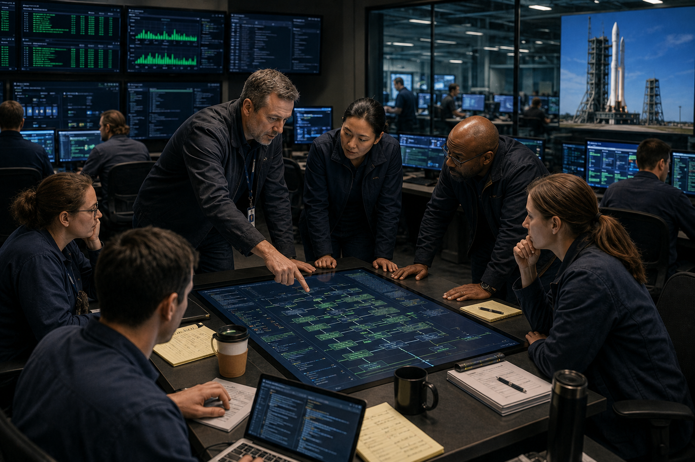
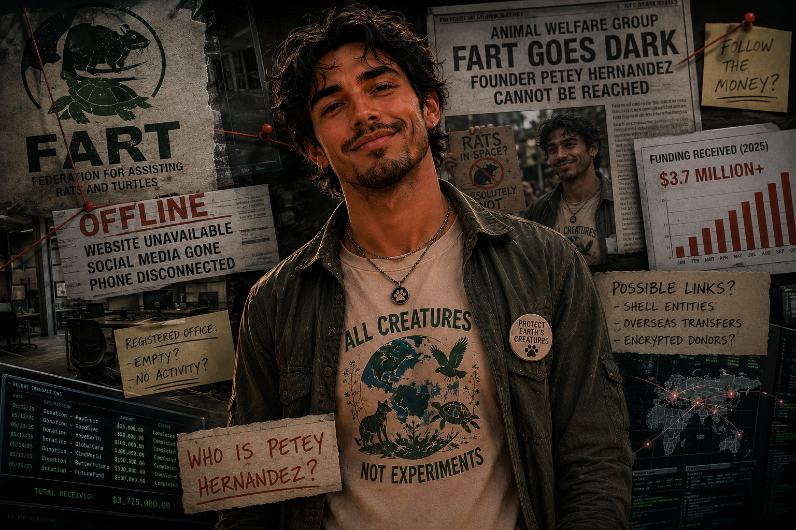

Kacentina's intelligence confirmed Thursday morning that the computer "issues"" that halted the KMM Valdoria launch have been formally identified as a ransomware attack. In a statement released to verified press outlets, the directorate said the attack was traced to infrastructure with links to Hazelian networks, though officials declined to comment in detail at this stage of the investigation.
Hazelian President Jibberson responded within the hour in a rare emergency address that he delivered visibly agitated. "This is an outrage and a lie," he said, pointing at the press. "Hazelia does not attack its neighbors. We do not do that. Whoever is saying this should be embarrassed." He went on to call the accusation "politically motivated" and said his government would be "demanding answers" from Kacentina directly.
The Hazelian foreign ministry later issued a longer written statement calling the intelligence report "hogwash" and said it contained "no credible evidence of any kind." Kacentina's foreign ministry responded by confirming only that the investigation was ongoing and that the government is standing by its security team's assessment.
Those familiar with the Hazelia President noted that the speed and intensity of Jibberson's response was unusual. "Most heads of state issue a formal denial through their ministry," said one analyst the Herald spoke with. "He went to the microphone himself, immediately. That's notable." The Kacentina government has not yet escalated to any formal action.
Continue Reading →Quillantis Leader Stumbles Over Questions About Hazelian Ties; Press Conference Ends Early
▼Quillantis President Adara Venk held a scheduled press conference Thursday on an unrelated bubblegum bill, but reporters quickly steered the room toward the KSA ransomware announcement. What followed was widely described as one of the more uncomfortable fifteen minutes in recent Quillantis political memory.
Asked directly whether Quillantis had any knowledge of Hazelian cyber capabilities being directed at Kacentina, Venk said the question was "not appropriate" and "not what today's event is about." When a second reporter followed up asking about the depth of Quillantis's financial ties to Hazelia and whether those ties should be publicly disclosed given the current circumstances, Venk turned to an aide, whispered briefly, and then announced the conference was ending. He left without taking further questions.
"That is not the behavior of a head of state who has nothing to hide," said one regional diplomat, speaking anonymously to the Herald. The Quillantis government press office issued a statement later in the afternoon that said only that Venk "remains committed to transparent governance" and would speak to the matter "when people cared enough to hear about bubblegum." No time was given.
Kacentina's foreign ministry said it had noted the press conference and declined to comment further. The two countries have no formal defense alliance.
Continue Reading →Ollijam "Has Questions" About Hazelia's Role, But Oliver Refuses to Draw Conclusions
▼Ollijam Prime Minister James Oliver returned to the cameras Thursday with a notably more careful tone than his earlier statement. "We have questions," he said, pausing before continuing. "We are not ready to point fingers. But we have questions." He declined to say what those questions were or who they were directed at.
Oliver said Ollijam was reviewing the incident summary circulated by Kacentina and would respond formally once that review was complete. He acknowledged that Ollijam maintains trade and diplomatic ties with Hazelia but called those "separate matters" that should not prevent honesty around the current situation. "Our relationship with any country does not make us blind," he said.
Analysts noted Oliver's tone had shifted meaningfully from his Day 2 posture, when he framed the incident as an attack on all nations and offered technical support. His refusal to explicitly defend Hazelia — despite the trade relationship — is being read in some diplomatic circles as significant. "Oliver is careful," said one observer. "When he stops defending you, it means something."
Ollijam has not recalled its ambassador to Hazelia or taken any formal diplomatic steps. Its foreign ministry confirmed only that it was "monitoring the situation closely."
Continue Reading →
KSA Security Teams Report "Significant Progress" — Source and Scope of Ransomware Now Understood
▼For the first time since the mission hold began, KSA officials used cautiously optimistic language Thursday morning. The investigation team released a brief update confirming that security teams had identified both the source and the method of the ransomware attack and were now in the remediation phase. The statement described progress as "significant."
"We know what happened, we know how it happened, and we are fixing it," said a spokesperson for the KSA technical operations center. "Our focus right now is restoring full system confidence before the launch window closes." Officials declined to release specifics of the attack method, citing ongoing security concerns about disclosing details before systems are fully secure.
Sources familiar with the investigation told the Herald that the attack was more targeted than initially assumed, affecting a specific set of launch systems rather than core flight hardware. This, they said, is the reason the launch vehicle itself has consistently shown clean diagnostics — the ransomware was never designed to touch it. The mission was stalled, not sabotaged in the physical sense.
The critical question now is whether the remediation can be completed before the optimal launch window expires at approximately 18:00 local time. If not, mission planners have said a revised window would be calculated — but no timeline for that has been shared.
Continue Reading →The Clock Is Running: What Happens If KSA Misses Today's Launch Window
▼The KMM Valdoria mission was designed around a specific orbital alignment that makes today's window the most efficient possible launch opportunity. KSA mission planners have confirmed the window closes at approximately 18:00 local time. If the security team can clear systems and certify them for launch before then, the mission can proceed as planned.
If the window is missed, the mission is not cancelled — but it gets significantly more expensive. A secondary window exists, but it requires additional fuel reserves and adjusts the mission's lunar approach trajectory, adding roughly four days to the total mission time. Crew readiness, equipment shelf life, and ground support scheduling all factor into the cost of a delay.
"We built this mission for this window," one mission planning source told the Herald. "A delay is not a failure. But it is not free, either." KSA Director Tholt has not spoken publicly since her brief Day 1 statement. Her office confirmed she has been at the operations center continuously since the hold began.
Continue Reading →
Animal Welfare Group FART Goes Dark Overnight; Founder Petey Hernandez Cannot Be Reached
▼Sometime between Wednesday night and Thursday morning, the website and all official social accounts for the Federation for Assisting Rats and Turtles — the Hazelian animal welfare nonprofit known as FART — went completely offline. The organization's website now returns an error. Its registered contact phone number plays a disconnection message. Its email addresses are no longer active.
The Herald made repeated attempts to reach founder Peter "Petey" Hernandez through every available contact channel and received no response. An address associated with the organization in Hazelia was visited by a reporter who found an empty office with no signs of recent occupancy. Neighbors of the listed office said they had never seen regular activity there.
The timing of the disappearance — occurring the same night that KSA intelligence released its preliminary assessment linking the ransomware attack to Hazelian network infrastructure — has not gone unnoticed. The Herald is not drawing conclusions, but we are noting the facts. FART was founded in 2025, raised an amount of money widely considered extraordinary for an organization of its age and size, and has now vanished within hours of Hazelia being named in a major international security incident.
The Hazelian government has not commented on FART's disappearance. The organization's legal registration status in Hazelia is currently being verified through official channels. This story is developing and will be updated as information is confirmed.
Continue Reading →KSA Youth Space Camp Wraps Up Its Best Season Yet; Students Reportedly "Devastated" It's Over
▼The Kacentina Space Administration's annual Youth Exploration Camp concludes its summer session Friday, and by all accounts it was the most successful year in the program's four-year history. Enrollment was up 22%, the waiting list was longer than ever, and the camp's signature cybersecurity competition produced what organizers called "the sickest work we've ever seen from this age group."
The mood at the closing ceremony is expected to be "genuinely sad" due to the conclusion of so much excitmenet. Campers were seen hugging their bunk counselors, trading contact information with new friends, and, in at least one well-documented case, weeping openly next to their computers. "I don't want to go home," one twelve-year-old told a Herald photographer. "There's nothing at home like this." Camp director Bryan Quillen said he hears that every year. "It never gets old," he said. "It's why we do it."
Applications for next summer's session open in early spring.
Continue Reading →Kacentina University Study Confirms What Everyone Already Suspected: Dinosaur-Shaped Chicken Nuggets May Actually Taste Better
▼A research team at Kacentina University's Department of Food Psychology has published findings suggesting that dinosaur-shaped chicken nuggets produce measurably higher enjoyment scores than identically prepared nuggets of a standard rectangular shape. The study involved 340 participants across a range of ages, all of whom were given identical nuggets prepared from the same batch — the only variable was the mold used to shape them.
Dinosaur-shaped nuggets scored an average of 14% higher on the study's enjoyment index. Researchers said the effect was strongest in children but "statistically meaningful" across all age groups, including adults. "There is something about the shape that affects perception," said lead researcher Dr. Oma Pressel. "We are not entirely sure why. We are looking into it." The study will be peer reviewed. The university press office confirmed this is real research and asked that the Herald not make it weird.
Continue Reading →